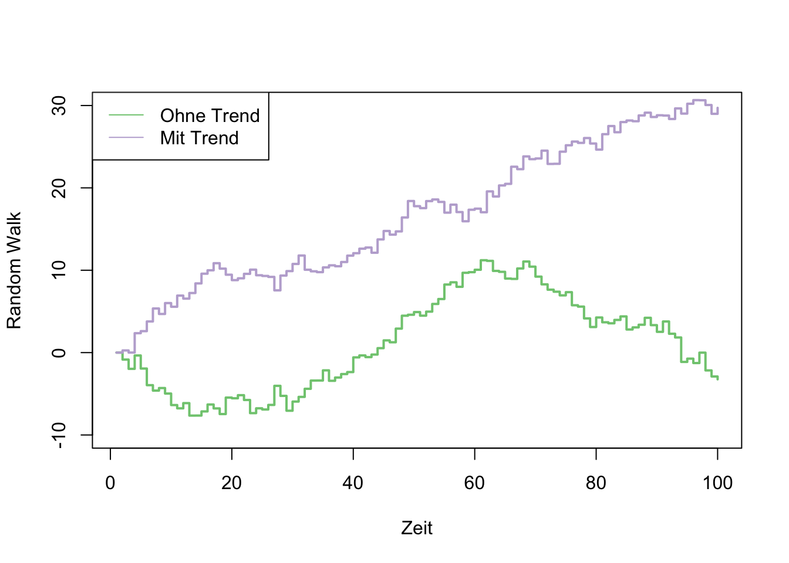

Evidence Accumulation Models: I
Theory, Simulation
![]()
Model in R
Wir versuchen, nun eine Entscheidung in R zu simulieren. Wir gehen davon aus, dass wir die Zeit in ganz kleine Schritten \(\Delta_t\) unterteilen (diskrete Zeit).
Wir modellieren die aktuelle Decision Variable zu Zeitpunkt \(t\) als normalverteilte Zufallszahl, bei der die driftrate den Mittelwert der Evidenz repräsentiert, und sd die Standardabweichung.
driftrate <- 0.5
sd <- 0.1evidence <- rnorm(n = 1, mean = driftrate, sd = sd)
evidence[1] 0.3973235Dies bedeutet, dass zum Zeitpunkt \(t\) die Evidenz ungefähr 0.4 beträgt. Da die Evidenz die durchschnittliche Steigung repräsentiert, wird Evidenz \(>0\) dazu führen, dass ein Schritt in Richtung der oberen Grenze gemacht wird. Wäre die Evidenz negativ, wird ein Schritt nach unten gemacht. Da die Evidenz aus einer Normalverteilung gezogen wird, ist es also möglich, dass die Evidenz zufällig negativ wird, obwohl die drift rate, d.h. die Repräsentation der Stimulusstärke, positiv ist.
Es wird angenommen, dass dieser Aspekt einigermassen gut die Vorgänge im Gehirn abbildet, da die neuronalen Antworten auf einen Reiz variabel sind (dies bedeutet, dass Neurone immer unterschiedlich auf einen Reiz reagieren, auch wenn dieser gleich bleibt).
Wenn wir dieses Prozess nun über einen Zeitraum wiederholen, und die evidence Werte aufsummieren, erhalten wir die decision variable. Diese sieht aus wie ein random walk mit einem Drift in die Richtung der durchschnittlichen Evidenz.
Random walk simulieren
Ein random walk ist das Resultat der Aufsummierung von Zufallszahlen. Probieren Sie es selber aus; simulieren Sie einen random walk mit 100 Zeitschritten. Fangen Sie bei \(0\) an, ziehen Sie 99 normalverteilte Zufallszahlen und berechnen Sie die kumulierte Summe. Plotten Sie das Resultat.
Dieser random walk hat keinen Trend, weil wir immer aus einer Normalverteilung mit Mittelwert \(\mu=0\) ziehen. Wenn wir stattdessen aus einer Verteilung mit \(\mu=0.1\) ziehen, erhalten wir einen positiven Trend.
set.seed(546)
# hier z.B> standardnormalverteilte Zahlen
zufallszahlen_1 <- c(0, rnorm(99, 0, 1))
random_walk_1 <- cumsum(zufallszahlen_1)
plot(1:100, random_walk_1, type = "s", col = "#7fc97f",
ylim=c(-10,30), lwd = 2,
xlab = "Zeit", ylab="Random Walk")zufallszahlen_2 <- c(0, rnorm(99, 0.3, 1))
random_walk_2 <- cumsum(zufallszahlen_2)
plot(1:100, random_walk_1, type = "s", col = "#7fc97f",
ylim=c(-10,30), lwd = 2,
xlab = "Zeit", ylab="Random Walk")
lines(1:100, random_walk_2, pch = 18, col = "#beaed4",
type = "s", lwd = 2)
legend("topleft", legend=c("Ohne Trend", "Mit Trend"),
col=c("#7fc97f", "#beaed4"), lty = c(1, 1))
Evidenzakkumulierung
Die Evidenzakkumulierung wird analog modelliert. Wenn wir explizit die Zeitschritte als Iterationen aufschreiben, können wir dies in R mit einer for Loop machen.
driftrate <- 0.5
sd <- 0.1
n_steps <- 10
evidence <- rep(NA, n_steps)
dv <- rep(NA, n_steps)
time_steps <- 1:n_steps
# Wir ziehen den ersten Wert aus der Verteilung
evidence[1] <- rnorm(1, mean = driftrate, sd = sd)
dv[1] <- evidence[1]
# für jeden weitern Zeitpunkt ziehen wir wieder eine Zufallszahl und addieren zur kumulierten DV
for (t in 2:n_steps) {
evidence[t] <- rnorm(1, mean = driftrate, sd = sd)
dv[t] <- dv[t-1] + evidence[t]
}tibble(time_steps, evidence, dv) |>
pivot_longer(c(evidence, dv), names_to = "type", values_to = "value") |>
ggplot(aes(time_steps, value, linetype = type, color = type)) +
geom_line() +
geom_point(size = 4) +
scale_color_viridis_d(begin = 0.2, end = 0.5)Die Decision Variable dv repräsentiert nun die kumulierten Evidenz, aufgrund dessen das Gehirn eine Entscheiung treffen kann. Wenn die Decision Variable entweder grösser als die ober Grenze ist, oder kleiner als die untere Grenze, wird die Evidenzakkumulierung abgebrochen, und eine Antwort wird ausgelöst. Wir können nun noch die “non-decision time” hinzufügen, und den Anfangspunkt der Evidenzakkumulierung. Dieser Anfangspunkt ist ein sehr wichtiger Parameter, denn wenn der Anfagnspunkt nicht genau in der Mitte zwischen den beiden Grenzen liegt, dann braucht es natürlich weniger Evindenz, um die Grenze zu erreichen, welche näher beim Anfangspunkt liegt.
Anhand der folgenden Funktion lässt sich ein simpler Entscheidungsprozess simulieren, welcher alle wesentlichen Komponenten enthält: die drift rate, boundary separation, bias und die non-decision time ndt.
| Parameter | Bedeutung | Anwendung |
|---|---|---|
| drift rate | Qualität der Evidenz pro Zeiteinheit | Task Schwierigkeit, Fähigkeit |
| bias | Anfangspunkt der Evidenzakkumulierung | A priori Präferenz für eine der beiden Alternativen |
| boundary separation | Vorsicht (caution) | Speed-Accuracy Trade-off |
| non-decision time | Verzögerung | Periphere Prozesse |
DDM Function
Um den Code zu verstehen, brauchen wir ein paar neue R Funktionen.
min(1, -2)[1] -2max(3, 4)[1] 4as.numeric(2)[1] 2array(dim = 2)[1] NA NAAus einer for Loop ausbrechen:
break()Zeitangaben in Sekunden:
bias <- 0.5
driftrate <- 0.8
decision_boundary <- 2
ndt <- 0.5
diffvar <- 0.1
dt <- 0.001
max_time <- 6Bias muss zwischen den decisioon boundaries liegen.
# rescale bias so that 0.5 lies halfway between upper and lower bound
bias <- as.numeric(2 * decision_boundary * bias - decision_boundary)Zeitschritte:
# initialize time_steps and dv
time_steps <- max_time/dt
dv <- array(dim = time_steps)Evidenzakkumulierung, ausgehend vom bias:
for (j in 2:time_steps) {
# non-decision time
if (j <= ndt/dt) {
# dv bleibt gleich
dv[j] <- dv[j-1]
}
else {
# Akkumulierung fängt an
error <- rnorm(1, 0, sqrt(diffvar * dt))
# dv ist alte dv plus drift plus noise
dv[j] <- dv[j-1] + driftrate * dt + error # Cobb & Zacks (1985), Eq. 1.14
# decision
if (abs(dv[j]) > decision_boundary) {
dv[j] <- dplyr::if_else(dv[j] > 0,
min(dv[j], decision_boundary),
max(dv[j], -decision_boundary))
break()
}
}
}d |>
ggplot(aes(time, dv)) +
geom_hline(yintercept = 0, linetype = 3) +
geom_line() +
scale_color_viridis_d(end = 0.8) +
geom_hline(yintercept = c(-2, 2), color = "black", size = 1) Warning: Removed 2782 row(s) containing missing values (geom_path).Function
drift_diffusion <- function(bias = 0.5,
driftrate = 0.8,
decision_boundary = 2,
ndt = 0.5,
diffvar = 0.1,
dt = 0.001,
max_time = 6) {
assertthat::assert_that(diffvar > 0)
# rescale bias so that 0.5 lies halfway between upper and lower bound
bias <- as.numeric(2 * decision_boundary * bias - decision_boundary)
# initialize time_steps and dv
time_steps <- max_time/dt
dv <- array(dim = time_steps)
# start acumulating from bias (starting point)
dv[1] <- rnorm(1, mean = bias, sd = sqrt(dt))
for (j in 2:time_steps) {
# non-decision time
if (j <= ndt/dt) {
dv[j] <- dv[j-1]
}
else {
error <- rnorm(1, 0, sqrt(diffvar * dt))
dv[j] <- dv[j-1] + driftrate * dt + error # Cobb & Zacks (1985), Eq. 1.14
if (abs(dv[j]) > decision_boundary) {
dv[j] <- dplyr::if_else(dv[j] > 0,
min(dv[j], decision_boundary),
max(dv[j], -decision_boundary))
break()
}
}
}
d <- dplyr::tibble(time = round(seq_along(dv) * dt, 3),
dv = dv,
steps = seq_along(dv),
driftrate = driftrate,
decision_boundary = decision_boundary,
bias = bias,
ndt = ndt)
return(d)
}Auswirkungen der Parameter
Wir können nun einige Trials plotten, um den Effekt dieser Parameter zu visualisieren.
Drift rate
Wir fangen an mit der drift rate. Wenn diese \(>> 0\) ist, wird die Obergrenze schnell erreicht, und es wir wenige Fehler geben. Ist die drift rate kleiner, aber immer noch \(> 0\), wird die durschnittliche Zeit länger, um eine korrekte Antwort zu geben.
set.seed(829)
slow <- drift_diffusion(driftrate = 0.8) |> mutate(type = "slow")
fast <- drift_diffusion(driftrate = 1.2) |> mutate(type = "fast")
fastslow <- bind_rows(fast, slow)
fastslow |>
ggplot(aes(time, dv, color = type)) +
geom_hline(yintercept = 0, linetype = 3) +
geom_line() +
scale_color_viridis_d(end = 0.8) +
geom_hline(yintercept = c(-2, 2), color = "black", size = 1) +
ggtitle("Grosse vs. kleine Drift Rate")Bias
Wenn der bias \(>0.5\) ist, wird die Obergrenze schneller erreicht. Hier gibt es nun eine Interaktion mit der drift rate—ist diese klein, und der bias \(<0.5\), ist die Chance, schnelle Fehler zu machen erhöht.
set.seed(29)
unbiased <- drift_diffusion(bias = 0.5) |> mutate(type = "unbiased")
upbiased <- drift_diffusion(bias = 0.7) |> mutate(type = "upbiased")
downbiased <- drift_diffusion(bias = 0.3) |> mutate(type = "downbiased")
bias <- bind_rows(unbiased, upbiased, downbiased)
bias |>
ggplot(aes(time, dv, color = type)) +
geom_hline(yintercept = 0, linetype = 3) +
geom_line() +
scale_color_viridis_d(end = 0.8) +
geom_hline(yintercept = c(-2, 2), color = "black", size = 1) +
ggtitle("Anfangspunkte")Warning: Removed 8605 row(s) containing missing values (geom_path).Boundary separation
Liegen die Grenzen weiter auseinander, braucht es mehr akkumulierte Evidenz, um eine der Grenzen zu erreichen. Dies führt dazu, dass weniger Fehler gemacht werden, da die zufällige Fluktuation über längere Zeit hinweg einen weniger starken Einfluss hat. Deshalb kann eine Verschiebung der Grenzen den Speed-Accuracy Trade-off erklären.
set.seed(84)
carefree <- drift_diffusion(decision_boundary = 1.6) |> mutate(type = "carefree")
cautious <- drift_diffusion(decision_boundary = 2.1) |> mutate(type = "cautious")
cautiouscareless <- bind_rows(carefree, cautious)
decision_boundaries <- tribble(~type, ~decision_boundary,
"carefree", 1.6,
"cautious", 2.1)
cautiouscareless |>
ggplot(aes(time, dv, color = type)) +
geom_hline(yintercept = 0, linetype = 3) +
geom_line() +
scale_color_viridis_d(end = 0.8) +
geom_hline(aes(yintercept = decision_boundary, color = type), data = decision_boundaries) +
geom_hline(aes(yintercept = -decision_boundary, color = type), data = decision_boundaries) +
ggtitle("Unterschiede im Abstand zwischen den Grenzen")Warning: Removed 7157 row(s) containing missing values (geom_path).Non-decision time
Eine Veränderung der non-decision time hat eine Auswirkung auf die durschnittliche Reaktionszeit, hat aber keinen Einfluss auf die Fehlerrate.
set.seed(4534)
longndt <- drift_diffusion(ndt = 0.7) |> mutate(type = "longndt")
shortndt <- drift_diffusion(ndt = 0.2) |> mutate(type = "shortndt")
ndt <- bind_rows(longndt, shortndt)
ndts <- tribble(~type, ~ndt,
"longndt", 0.7,
"shortndt", 0.2)
ndt |>
ggplot(aes(time, dv, color = type)) +
geom_hline(yintercept = 0, linetype = 3) +
geom_line() +
scale_color_viridis_d(end = 0.8) +
geom_vline(aes(xintercept = ndt, color = type), data = ndts) +
geom_hline(yintercept = c(-2, 2), color = "black", size = 1) +
ggtitle("Unterschiede in der Non-Decision Time")Warning: Removed 6407 row(s) containing missing values (geom_path).Simulationen
Die Verteilungsfunktion sind im R Package rtdists enthalten. Damit können zum Beispiel Zufallszahlen aus der DDM Verteilung ziehen, ohne dass wir den Prozess wie oben Schritt für Schritt modellieren müssen.
Wir können so ein Experiment simulieren, bei dem die Fehler im Schnitt schneller als die korrekten Antworten sind, indem wir eine A Priori Präferenz für die Untergrenze definieren (z = 0.2).
Die 5 wichtigsten Argumente der Funktion sind:
n: Anzahl Zufallszahlen
a: boundary separation
v: drift rate
t0: non-decision time
z: biasrts <- rdiffusion(500, a = 1, v = 2, t0 = 0.5, z = 0.2)
glimpse(rts)Rows: 500
Columns: 2
$ rt <dbl> 0.9946603, 0.6598096, 0.5840942, 0.8145105, 0.7448141, 0.6305…
$ response <fct> upper, upper, lower, upper, upper, upper, upper, upper, upper…head(rts) rt response
1 0.9946603 upper
2 0.6598096 upper
3 0.5840942 lower
4 0.8145105 upper
5 0.7448141 upper
6 0.6305719 upper
Reuse
Citation
@online{ellis2022,
author = {Andrew Ellis},
title = {Evidence {Accumulation} {Models:} {I}},
date = {2022-04-12},
url = {https://kogpsy.github.io/neuroscicomplabFS22//pages/chapters/09_evidence_accumulation_1.html},
langid = {en}
}